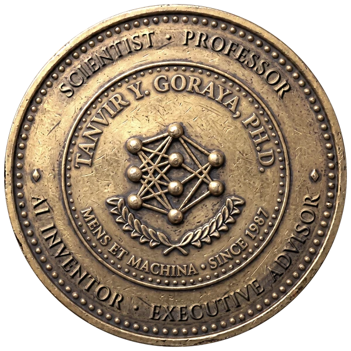

Tanvir Y. Goraya, Ph.D.
Professor and practitioner-scientist; taught graduate AI at Case Western Reserve for 20+ years; pioneer in machine learning, AI and robotics since 1985, building on his own inventions; most recently Director of AI & Big Data, Case Western Reserve University; shipping production AI since 1987, decades before it went mainstream. Co-founder of AI WARE and inventor of its core technology, delivered to 130+ named organizations before its acquisition by Computer Associates. Principal Investigator for the U.S. Air Force and NASA, with sponsored research at Case Western Reserve funded by the Air Force, NASA, Computer Associates and the Charles B. Wang Foundation. Sole inventor of U.S. Patent 8,326,792. Now advising executives and boards on where AI creates real value.
Selected impact
- Air Force design time cut by 80%. As Principal Investigator, led the Rapid Foundry Tooling System: casting-pattern design for aircraft, missile and spacecraft parts fell from two weeks to under two days. A Wright Laboratory Success Story. Design News (1990) called the episodic associative memory of its predecessor, the Rapid Design System, "perhaps the most advanced, ambitious, and unique" part of the program.
- Co-founded AI WARE and invented its core technology. 500+ installations at 130+ named organizations; R&D Magazine Elite Award, 1994; acquired by Computer Associates (“the world’s leading business software company,” by its own description), 1997, and relaunched worldwide as CA Neugents (“Software That Can Think”), an IndustryWeek 1998 Technology of the Year built into Unicenter TNG, about a quarter of CA’s revenue.
- Power-plant emissions cut with AI. Named NeuSight, a combustion optimizer that reduced NOx and CO at coal-fired plants, and spun off Pegasus Technologies to sell it to utilities including Houston Lighting & Power and Ameren.
- Formulation design from days to minutes. CAD/Chem found an optimum Glidden's chemists had ruled out, cutting an expensive monomer 96%, in about an hour; held-out drug-dissolution predictions came within 0.8%. Reported by Glidden (ICI) and Lord Corporation in a 1992 Scientific Computing & Automation cover story.
- An operator's AI assistant in the 1990s. Process Advisor flagged 83–90% of defective die castings in held-out tests on a NIST-supervised project, and its models ran inside Elsag Bailey process controllers.
- A NASA SBIR success story. An AI method that chooses which experiments to run to build a design model (1990, Phase II; later Phase III), listed by NASA in NASA/TM-1999-209649; used in NASA Lewis structural analysis and at Wright-Patterson for composites, and sold with CAD/Chem. Neural networks and genetic algorithms on Cray supercomputers cut structural design from months to hours.
- Captured what experts cannot say. His Ph.D. (2001) and patent model an expert twice, as what they say and what they actually do, and show the gap. Each model built in under an hour by the expert alone; 74 of 74 database professionals said it would help; 13 production processes ran 9× faster. First to apply neural networks to learning experts' judgment (NASA, 1989).
- Database run times from hours to minutes. With MindModeler's episodic memory, captured the tacit judgment of award-winning database tuners, who recited the rules but acted on intuition, and tuned a production Oracle database: one process from 6 hours to 32 minutes, another from 8 hours to 2 minutes 16 seconds.
- Remote AI over telephone wire, 1990s. At Ferro, spectrophotometer readings from automotive paint customers in 40 countries crossed twisted-pair phone lines to his lab, where fuzzy logic and neural networks identified pigments and process conditions and sent the recipe back, replacing color experts with decades of experience.
- Expert judgment captured in days. MindModeler (U.S. Patent 8,326,792), offered to clients through Ernst & Young's Intellinex.
Selected clients
Pharmaceuticals: Eli Lilly, Merck, Pfizer, Schering-Plough, Zeneca, Abbott. Chemicals & consumer: 3M, Procter & Gamble, Unilever, Dow, BASF, DuPont, Monsanto, Mitsubishi Chemical. Energy: Exxon, Amoco, BP Chemical, Castrol. Industry: Goodyear, Bridgestone/Firestone, Sherwin-Williams, Ford, Allied Signal, Kobe Steel. Government: U.S. Air Force, NASA, USDA. Finance, law & education: Credit Suisse, Arter & Hadden, Harvard, Case Western Reserve.
Theory Garden and MindModeler software: more than 1,500 universities and government agencies worldwide, plus Microsoft, HP and SPSS.